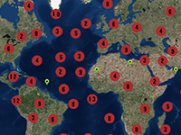

Example of grouping markers.
Usage instructions:
Add this script to map GameObject.
Add this script to map GameObject.
GroupMarkersExample.cs
/* INFINITY CODE 2013-2016 */
/* http://www.infinity-code.com */
using System.Collections.Generic;
using System.Linq;
using UnityEngine;
namespace InfinityCode.OnlineMapsExamples
{
[AddComponentMenu("Infinity Code/Online Maps/Examples (API Usage)/GroupMarkersExample")]
public class GroupMarkersExample : MonoBehaviour
{
/// <summary>
/// Base texture for grouping marker.
/// On top of this texture will be drawn numbers.
/// </summary>
public Texture2D groupTexture;
/// <summary>
/// The number of markers that will be created in the scene.
/// </summary>
public int countMarkers = 100;
/// <summary>
/// The minimum distance between the markers.
/// </summary>
public float distance = 30f / OnlineMapsUtils.tileSize; // pixels / 256
/// <summary>
/// Texture with numbers (2 rows: 1-5, 6-0).
/// </summary>
public Texture2D font;
private List<OnlineMapsMarker> markers;
private void Start()
{
markers = new List<OnlineMapsMarker>();
for (int i = 0; i < countMarkers; i++)
{
OnlineMapsMarker marker =
OnlineMaps.instance.AddMarker(new Vector2(Random.Range(-180f, 180f), Random.Range(-90, 90)));
marker.label = "Marker " + i;
markers.Add(marker);
}
GroupMarkers();
}
private void GroupMarkers()
{
List<MarkerGroup> groups = new List<MarkerGroup>();
for (int zoom = 20; zoom >= 3; zoom--)
{
List<OnlineMapsMarker> ms = markers.Select(m => m).ToList();
for (int j = 0; j < ms.Count - 1; j++)
{
OnlineMapsMarker marker = ms[j];
MarkerGroup group = null;
Vector2 pos = OnlineMapsUtils.LatLongToTilef(marker.position, zoom);
int k = j + 1;
while (k < ms.Count)
{
OnlineMapsMarker marker2 = ms[k];
Vector2 pos2 = OnlineMapsUtils.LatLongToTilef(marker2.position, zoom);
if ((pos - pos2).magnitude < distance)
{
if (group == null)
{
group = new MarkerGroup(zoom, groupTexture);
groups.Add(group);
group.Add(marker);
if (marker.range.min == 3) marker.range.min = zoom + 1;
}
group.Add(marker2);
if (marker2.range.min == 3) marker2.range.min = zoom + 1;
ms.RemoveAt(k);
pos = group.tilePosition;
}
else k++;
}
}
}
foreach (MarkerGroup g in groups) g.Apply(font);
}
private class MarkerGroup
{
public List<OnlineMapsMarker> markers;
public OnlineMapsMarker instance;
public Vector2 center;
public Vector2 tilePosition;
public int zoom;
public MarkerGroup(int zoom, Texture2D texture)
{
markers = new List<OnlineMapsMarker>();
this.zoom = zoom;
instance = OnlineMaps.instance.AddMarker(Vector2.zero, texture);
instance.align = OnlineMapsAlign.Center;
instance.range = new OnlineMapsRange(zoom, zoom);
}
public void Add(OnlineMapsMarker marker)
{
markers.Add(marker);
center = markers.Aggregate(Vector2.zero, (current, m) => current + m.position) / markers.Count;
instance.position = center;
tilePosition = OnlineMapsUtils.LatLongToTilef(center, zoom);
instance.label = "Group. Count: " + markers.Count;
}
public void Apply(Texture2D font)
{
int width = instance.texture.width;
int height = instance.texture.height;
Texture2D texture = new Texture2D(width, height, TextureFormat.ARGB32, false);
Color[] colors = instance.texture.GetPixels();
char[] cText = markers.Count.ToString().ToCharArray();
Color[] fontColors = font.GetPixels();
int cw = font.width / 5;
int ch = font.height / 2;
int sx = (int) (width / 2f - cText.Length / 2f * cw);
int sy = (int) (height / 2f - ch / 2f);
for (int i = 0; i < cText.Length; i++)
{
int co = cText[i] - '0' - 1;
if (co < 0) co += 10;
int fx = (co % 5) * cw;
int fy = (1 - co / 5) * ch;
for (int x = 0; x < cw; x++)
{
for (int y = 0; y < ch; y++)
{
int fi = (fy + y) * font.width + fx + x;
int ci = (sy + y) * width + sx + x + i * cw;
Color fc = fontColors[fi];
colors[ci] = Color.Lerp(colors[ci], new Color(fc.r, fc.g, fc.b, 1), fc.a);
}
}
}
texture.SetPixels(colors);
texture.Apply();
instance.texture = texture;
}
}
}
}